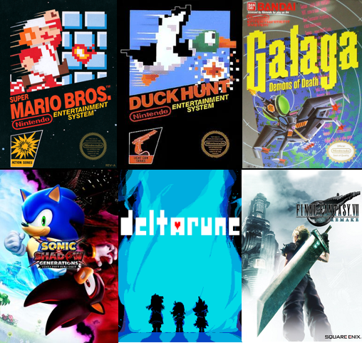

My name is Ethan Coffey; I am a Computer Science graduate from Clemson University who is actively pursuing software development/engineering opportunities. Ever since I was born on August 28th, 2001, life has been quite a doozy.
What do I consider a doozy? I, along with my family, have lived in several different states. For the first 6 years of my life, I lived in Greenville, North Carolina (and don’t remember much), however, my father was laid off from his job, forcing him to find employment elsewhere. First, we moved to Warner Robin, Georgia, enjoying peaches and a nice lakeside view. Then after a few years and another layoff we moved to Appleton, Wisconsin , where we froze our butts off outside, but enjoyed the many water parks inside. To get into a slightly better living situation, we moved to Manitowoc, Wisconsin (finally not a large move 😄?). After 8 years in Wisconsin, another layoff reared its ugly head, and we found our way back down south to Florence, South Carolina and now currently reside in Camden, South Carolina.
What is there to know about me? Well, I can think of two characteristics that define me well. One, I don’t like to take things for granted and Two, I don’t need much to be happy. Because of the uncertainty I’ve had throughout my life, I learned to cherish what I have. As I mentioned before, I’m looking for a job that focuses on my major of Computer Science. As of now, I have a full-time job working as an On-Site print representative for the VBOA (who works under PWC). The goal of this position is to print a variety of documents relating to healthcare (Bills, Medical Records, etc.). We send these documents to patients and health insurance agencies , assuring the validity and safety of patient information (avoiding HIPPA violations). I originally had a software job lined up for when I graduated in December 2024 with the DOD, however the hiring freeze enacted in February 2025 has caused this position to remain in limbo. Even though a situation like this is unfortunate, I’m glad that I have some sort of job at all, so that I can support myself, pay student loans and save for my future (Which I believe will be bright!).
When I have free time away from all this job hunting/work, I like to delve into my hobbies , them being video games and staying in shape. These hobbies may seem a bit dry in text, but I like to believe they have been life shaping for me.

Over the years, I’ve played such a wide range of games, from the original Super Mario Bros., Duck Hunt and Galaga (played on bootleg hardware 😁), to the stunning, colorful and bleak games of today such as Sonic x Shadow Generations, Deltarune and the Final Fantasy Series. For years, I’ve been building a collection of both physical and digital games, and it fills me with joy playing them. As for staying in shape, this is for taking care of the current and future me. I like lifting dumbbells, walking and stretching daily. I’m hoping to be in a body that feels good by the time I’m 100+.
Why Computer Science? I enjoyed playing many video games growing up. So, when I had to make the split-second decision that would determine my entire life, I wanted a major that focused on my biggest hobby, gaming!
Computer Science is what I landed at, a great major with what seems like infinite potential growth. Before I started my CS journey, I went to a tech school in South Carolina named Florence Darlington Tech (FDTC).
I went there to cover most of my general education, so that when I started at Clemson, I wouldn’t have much debt. During my time at FDTC, I learned more about game development and other career roles available to me.
This exposure helped me to understand the vast amount of roles other than a game developer that my CS major could open the door to.
So why did I create this website? To be noticed! To be perceived! To use my degree! Finding a job can be tough, especially when competing with 1000's of your peers with the same degree. Through the help of Nick Tiernan, a Programming Manager at the VBOA, he suggested to me the solution of creating a website, to show off my personality and what I can bring to the table. I hope this site can give a positive outlook on me, and that it would make someone (like yourself) want to reach out to me. Thank you very much for giving this cite a visit, it means a lot!
What is the theming of this website? By now I’m sure you have noticed the color scheme of this tab is quite different from the home screen. Each page’s color scheme is based off characters from one of my favorite franchises, Sonic the Hedgehog. Now, am I breaking some simple web design principles by doing this? Sure, but its something I wanted to do, to give my cite a bit more flare!
Now that you know a little bit about me, I recommend heading to the Programming Languages tab to see what I bring to the table 👍.